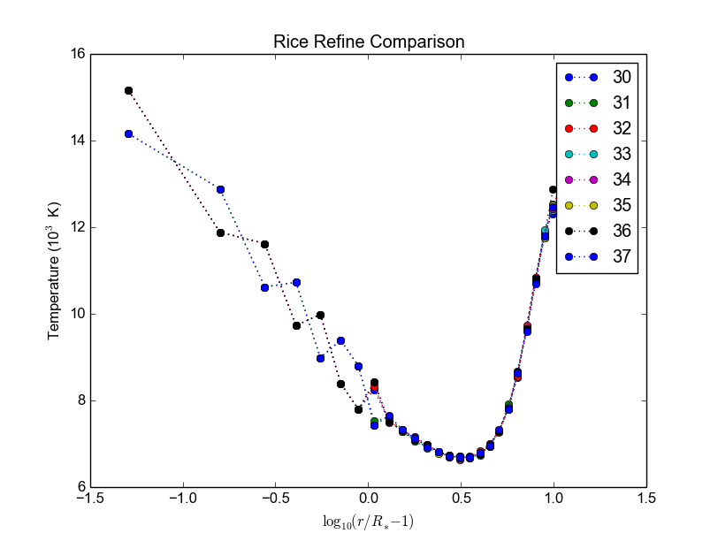
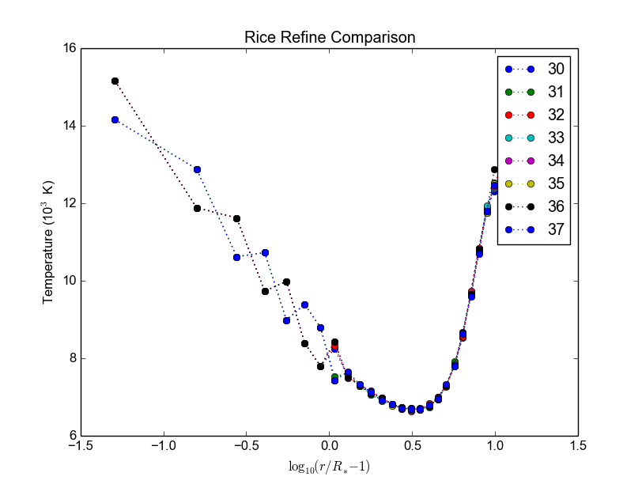

Codes Usage
Table of contents
Hdust
Flags
| Compiler | FC (s) | CFLAGS (s) | FC (par) | CFLAGS (par) | clusters |
|---|---|---|---|---|---|
| intel | ifort | -132 | mpif90 | -132 -xHost -O3 -ipo -no-prec-div | acrux, lical |
| path_scale | pathf95 | mpif90 | -apo -Ofast | projekct | |
| gfortran | gfortran | mpif90 | -O2 | acrux |
Computational time
| Step | n_f | time (min) | ncr | Σ0 | n_proc |
|---|---|---|---|---|---|
| 1 | 2.5e6 | 1.5 | ? | ? | 48 |
| 1 | 2.5e7 | 15 | ? | ? | 48 |
| 1 | 2.0e7 | 53 | 40 | ? | 48 |
| 1 | 7.5e8 | 390 | 40 | ? | 48 |
| 5, Sob 1 | 5.0e6 | 3 | ? | ? | 48 |
| 5, Sob 1 | 5.0e7 | 30 | ? | ? | 48 |
| 5, Sob 0 | 2.0e7 | 2 | ? | ? | 48 |
Valores para teste (execução em aprox. 1 min em mpirun -np 3):
- step1: 30000
- SED: 500000 (Sob 0)
- Ha: 50000 (Sob 1)
- com poeira: 520 (Sob 1; teste para Cesar em 2016-06-17, gridBBre)
- (valores podem variar de até um fator 1/2 ou 2, dependendo dos parâmetros e máquina usada).
Bugs
Afirmação de 17/06/2013: NaN não é um problemas de compilador ou cluster. Resultados idẽnticos no cluster projekct e na alphacrucis.
forrtl: severe (408): fort: (18): Dummy character variable 'MODE' has length 5 which is greater than actual variable length 1
Na versão serial: ocorre devido a flag -C na compilação.
forrtl: severe (71): integer divide by zero
Na versão paralela: ocorre devido a um arquivo mal especificado no input!
Program received signal SIGFPE: Floating point... Backtrace for this error:
Na versão paralela: ocorre devido a um ausência do mpirun no comando de execução!
Mesocentre
Comandos:
ssh $USER@ssh-n.oca.eu ssh $USER@licallo.oca.eu # Tunel por uma porta: alias lical="echo '# Redirecting licallo to port 7025...'; ssh -l $USER -L 7025:licallo.oca.eu:22 ssh-n.oca.eu -N" # Copiar arquivos: scp hdust.zip $USER@licallo.oca.eu:/beegfs/home/USER scp -P7025 $USER@localhost:/beegfs/home/USER/hdust/runs/hdust/R82/models.tar . scp -P7025 *.oar $USER@localhost:/beegfs/home/USER/hdust/runs/hdust/ scp -P7025 *.oar *.inp $USER@localhost:/beegfs/home/USER/hdust/runs/hdust scp -P7025 $USER@localhost:/beegfs/home/USER/hdust/runs/hdust/be_pol_lines/mod01/* .
Exemplos: https://www.oca.eu/fr/acces-fonctionnement/gestion-des-jobs/1340-exemples-de-scripts
Comandos: https://www.oca.eu/fr/acces-fonctionnement/gestion-des-jobs/1359-commencer-avec-slurm
VPN: https://dsi.oca.eu/spip.php?article912
- Para compilar o HDUST, Mudar no XDR makefile:
- gcc -> icc
- gfortran -> ifort
Comandos:
chmod +x mod01.slurm
sbatch ./mod01c.slurm
squeue | grep acar
scancel numero_do_job
Old (2017 and before)
Or Licallo at CRIMSON. Info at https://crimson.oca.eu/spip.php?rubrique57
#!/bin/bash #OAR -n hdust_dmf #OAR -l /core=24,walltime=12:00:00 #OAR -p gpu='NO' #OAR -O out.%jobid% #OAR -E err.%jobid% source /softs/env_default.sh mpiexec.hydra -machinefile $OAR_FILE_NODES \ -bootstrap ssh -bootstrap-exec /usr/bin/oarsh \ -envall ./hdustparv2.02.bc input = hdust_bestar2.02.inp
The submission is
chmod a+x job.oar oarsub -S ./job.oar oarstat
Running times
- bestar2.02, step1, 500000/24, one .temp in 30 sec.
- bestar2.02, SED, ?
Tlusty + Synspec
Tlusty: A computer program for calculating non-LTE stellar atmosphere models. The hybrid CL/ALI method + superlevels and supertransitions are treated by Opacity Distribution Functions (ODF).
To compile:
gfortran -fno-automatic -O3 -ffixed-line-length-none -std=legacy -o tlusty200 tlusty200.f
Error in line 1365 (Tlusty200):
-* ’QTLAS ’,’ITLUCY’,’IACLT ’,’IACLDT
Synspec: a general spectrum synthesis program. It assumes an existing atmospheric model (Tlusty or Kurucz).
Synplot: a wrapper for Synspec.
Kurucz
Hdust uses ap00k1.pck, with Solar abundances from Anders & Grevesse (1989). In this format, all models are inside a single file.
hdust.pro
ilow = 2; transitions starting at Balmer series (n = ilow = 2).
Nlower = 6; it will consider the following Nlower series (ilow_max = 2+6-1 = 7).
Nupper = 12; each series above (Nlower) will have Nupper transitions.
Nlines = NupperNlower; this is the total number of transitions considered.
Synspec + Synplot
Arquivos necessários para rodar o synspec:
- synspec (EXE) + rotin (EXE)
- synplot.pro (IDL)
- entrada.5 ("main input"). Aqui também o .dat, arquivos com as informações das transições das linhas (atom models, no site do Tlusty).
- kurucz.dat. Modelos de atm. do Kurucz - ou do Tlusty.
IDL > synplot49, 0, 0, 0, wsta=6530, we=6600, vrot=0, atmos=['atmos.5', $ 'ap00k1tef15000g3.0.dat'], wd=0.5, imode=2, /kurucz, x, y IDL > synplot49, 0, 0, 0, wsta=6530, we=6600, vrot=0, atmos=[$ 'BG15000g300v2'], wd=0.5, imode=2, x, y ;+ nst file
fort.5 = std input; fort.8 = model.
"Bug" no synspec: se o modelo de atmosfera for de 72 (Kurucz), com dens=0 ele trava (acontece no último nível de atm. Deve-se remover).
Synspec
Para compilar com o synspec com gfortran, vc precisar deixar a linha 1558 e seguinte assim:
IF(FINSTD.NE.BLNK) * OPEN(UNIT=INPFI,FILE=FINSTD,STATUS='UNKNOWN')
(acho que é só trocar NAME por FILE).
$ gfortran -g -fno-automatic -static -o synspec49.exe synspec49.f
VARTOOLS
http://www.astro.princeton.edu/~jhartman/vartools.html
Basic/help commands
vartools -listcommands vartools -help vartools -help $commnad vartools -example $command
Basic RMS
vartools -i EXAMPLES/1 -rms
-i $file, input of single file
-rms, calculate the RMS of the lightcurve.
Basic list RMS
vartools -l EXAMPLES/lc_list -rms
-l $file, where $file is a filename list containing the light curves, a (sub)file per line. The subfile contains a single lightcurve, 3 col: [JD, mag, errmag].
Site examples
Fitting a quadratic polynomial in JD to a list of light curves
vartools -l EXAMPLES/lc_list -rms -decorr 1 1 1 0 1 1 2 0 -rms -chi2 -tab
- -decorr B B B # # B, decorrelates the light curve against specified signals
- 0/1 enable/disable
- 0/1 zero point term is included
- 0/1 subtract the first term
- 0/Nglobalterms globalfileN orderN, number of global files (files with JD and signal) + syntax
- Nlcterms lccolumnN lcorderN, is the number of light curve specific signals. The columns of these signals are given by lccolumn1...lccolumnN. The orders of the polynomials are given by lcorder1...lcorderN.
- 0/1 output mode, 0 our [dir]. If 1, the output contains the decorrelated signal.
-chi2, Calculate chi2 per dof (degree of freedom) for the light curves. The output will include chi2 and the error weighted mean magnitude.
-tab format do output
Minha interpretação: 112 do final do comeando indica que só há um ajust por arquivo (1), as colunas destes sinais são as primeiras, do JD (1), e o polinômio a ser ajustado é de ordem 2 (2). Não faço ideia do pq nao se especifica os dois primeiros termos com -i.
Performing a Lomb-Scargle period search on a light curve and fitting a harmonic series to the light curve
vartools -i EXAMPLES/2 -LS 1.0 2.0 0.01 1 0 -Killharm ls 0 0 1 EXAMPLES/OUTDIR1 -oneline
- -LS, Perform a Generalized Lomb-Scargle (L-S) search of the light curves for periodic sinusoidal signals. The search is done over frequencies between fmin = 1/maxp to fmax = 1/minp, with a uniform frequency step-size of Delta f = subsample/T, where T is the time-span of the observations.
- minp maxp subsample Npeaks o(uput)periodogram
- -Killharm, This command whitens light curves against one or more periods. The mean value of the light curve, the period of the light curve and the cos and sin coefficients are output.
- Killharm_Per1_Amplitude_1 = Max-Min
-oneline, Output each statistic on a separate line rather than using the default of outputing a table. This option can provide more readable output when processing a single light curve. It is not suggested when processing a list of light curves.
amdlib
http://www.jmmc.fr/data_processing_amber.htm
Install
It worked on Ubuntu 13.10 32-bits (v3.0.6+) and 14.04 64-bits (v3.0.9). Problems with Ubuntu 14.04 and (v3.0.[6-8]) (32-bits and 64-bits).
sudo apt-get install yorick
Simply unzip the corresponding bin zip and add /path/amdlib-VERSION/bin/amdlib to your ~/.bashrc:
alias amdlib="$HOME/amdlib/bin/amdlib"
Running
// Access help help,amdlibFunction // To run a script include,"/path/to/script.i";
compiling errors
ld: cannot find -lm
It means that an required static library was not found. You can: - (Install the library) - Specify library location using -L flag (-L/usr/lib/x86_x64/) - Or add the location of libraries to LIBRARY_PATH variable - Or don't use the -static or -fast compiler options.
USP-Rice
Antigo (Usando os recursos Rice)
Usando o BG/P
E-mail + conversa no lcca@usp.br. Então, aprovação do Paul (ele me mandou um e-mail).
Acesso a máquina bluegene.rice.edu (aliased to bgp-fn.rcsg.rice.edu). If you are not on the Rice network, this is accomplished by tunneling a connection through shark.lcca.usp.br or gw.rcsg.rice.edu.
If you do not have an account on shark, contact LCCA.
gw.rcsg.rice.edu will use your Rice NetID account information.
When using secure shell to transfer files, it helps to employ a simpler encryption algorithm, use '-c arcfour' to speed up transfers.
E-mail para o lcca@usp.br em 17/04/15:
Eu já recebi a aprovação do Paul. Quais são os próximos passos???
- O username (Rice NetID) será automaticamente gerado??
Foi. Userr dm#
- Minha conta será para o BG/P, Q ou ambos? Pelo que eu entendi, o endereço bluegene.rice.edu apontará para o Q.
Como acessar o P?
Só o P.
- No site rice.usp.br, quando eu clico em "Getting Started on BG/P" ele automaticamente vai para a página do "Q"...
Os procedimentos são os mesmos em ambos?
- O número mínimo de cores a serem solicitados no Q são 512? Como (e onde) fazer os testes com meu código?
Os testes deveriam ser feitos com menos cores...
A referência do código desenvolvido pelo meu orientador é http://adslabs.org/adsabs/abs/2006ApJ...639.1081C/
Compilando
mpi/gcc - erro no mpif90. Serial ok.
mpi/fast (XL IBM compiler). mpif90/mpif77; Não usar xlf90/xlf ou xlc, usar bgxlf_r e bgxlc_r;
... (.text+0x1f258): undefined reference to `fxdrrl' inicializa.o: In function `create_averaged_temp_file': (.text+0x1f9d0): undefined reference to `fxdrrl' inicializa.o: In function `create_averaged_temp_file': (.text+0x1f9ec): undefined reference to `fxdrrl' inicializa.o:(.text+0x1fa04): more undefined references to `fxdrrl' follow inicializa.o: In function `create_averaged_temp_file': (.text+0x1fb8c): undefined reference to `fxdrcls' inicializa.o: In function `create_averaged_temp_file': (.text+0x20050): undefined reference to `fxdrini' inicializa.o: In function `create_averaged_temp_file': ... make: *** [../../runs/hdust/hdustparv2.02.bc] Error 1
Help: https://docs.rice.edu/confluence/display/ITDIY/Request+Help+with+Research+Computing+Resources
The above link and HelpDesk are the same!!
Queues + Running
https://docs.rice.edu/confluence/display/ITDIY/IBM+Blue+Gene+Documentation
#@ job_name = hello_dm# #@ comment = "Hdust test" #@ error = $(job_name).$(jobid).err #@ output = $(job_name).$(jobid).out #@ environment = COPY_ALL #@ wall_clock_limit = 00:30:00 #@ notification = error #@ job_type = bluegene #@ class = devel #@ group = pcw2 #@ bg_size = 128 #@ queue /bgsys/drivers/ppcfloor/bin/mpirun -exe /bgpscratch/dm#/hdust/hdustparv2.02.bc \ -mode VN -np 512 -args " = hdust_bestar2.02.inp"
The queue managener commands llsubmit ./sample.bgq, llq and llcancel bgp-fn.xxx.
Tests
bestar2.02/mod01/mod01b.txt; step1 = 500,000 photons; 33 *.temp files in 20 minutes.
bestar2.02/mod01/mod01b.txt; step1 = 2,000,000 photons; 33 *.temp files in 35 minutes.
Figure below: blue, distribution; green, BG/P.
 

Usando os recursos Rice II - Set/2015-Jan/2016
Inscrição
Os passos são:
- E-mail para o LCCA pedindo uma conta (com info. do HDUST e mini-projeto)
- (LCCA vai confirmar as infos. com o Alex, que responderá com um ok)
- (O LCCA vai encaminhar um e-mail ao Paul, na Rice)
- Preenche-se um formulário solicitando um Rice NetID (coloca-se senha, mas sem username). Informar o Paul como sponsor.
- Receber o Rice NetID (username)
- Preencher um segundo formulário pedindo acesso ao BG/Q
- (O Paul vai liberar o acesso) e pronto! (UFA)
- Send the following information from your USP email address to lcca@usp.br: Your name, position (i.e. grad student, post-doc, professor), department, the name of the PI (make sure to cc the PI when making the request, since they will need to confirm the request), software you want to use on the BG, estimated number of cores per calculation, and a 1-2 paragraph description of the types of calculations you want to perform.
- After you receive confirmation from LCCA, request a Rice Guest Account here (https://my.rice.edu/GuestAccount/form.jsp). When requesting the Rice Account, indicate pcw2@rice.edu as your sponsor (DO NOT select "BlueGene USP Allocation" as the sponsor), and forward the LCCA approval email to that address. It is VERY important that you provide a valid email address when you request an account. If we can not contact you, then your accounts may be terminated without notice. Finally, if you do not obtain approval from LCCA first, the Rice Guest Account will not be approved.
When your guest account is approved, you will be assigned a Rice NetID. This will be your login information for all resources located at Rice, so don't lose it. Typically, the Rice ID will be activated within 24 hours. Once the Rice ID is active, we will activate your account on the BG/P. You will also be added to the USP BGP listserve. If you don't receive confirmation within 3 business days about the listserve, or BG/P account, please inquire with the sponsor (Paul Whitford, pcw2@rice.edu).
Once your account is activated on the BG, you will need to connect via secure shell (bluegene.rice.edu). If you are not on the Rice network, this is accomplished by tunneling a connection through shark.lcca.usp.br or gw.rcsg.rice.edu. If you do not have an account on shark, contact LCCA. gw.rcsg.rice.edu will use your Rice NetID account information.
Dúvidas aqui: http://usp.rice.edu
Primeiros passos
https://docs.rice.edu/confluence/display/ITDIY/Bluegene+Q+Getting+Started+Guide
$ ssh dm#@gw.rcsg.rice.edu
$ ssh bluegene.rice.edu
Módulos https://docs.rice.edu/confluence/display/ITDIY/Customizing+Your+Environment+with+the+Module+Command
$ module avail$ module load mpi$ module list# $ module purgemkdir /bgpscratch/whoami
Submit ALL jobs from your scratch directory, and job output should only be written to the scratch directory. Executables may remain in your home directory, but do not write to the home during a job. Purge Policies
Files in the scratch directory that are more than 2 weeks old will be removed automatically.
- Job scheduling is done via Loadleveler.
Cores are allocated in blocks of 512 CORES [bg_size=128(*4)]. If you request less than this, you will still be allocated 512 CORES, meaning that the additional cores are going to be sitting idle. Whenever your number of cores is not an integer multiple of 512, there will be idle cores. Please ensure that you do not waste cycles unintentionally.
Exemplo transferencia de arquivos
$ scp /data/hdust.zip dm#@gw.rcsg.rice.edu:/tmp The Rice University Network - Unauthorized access is prohibited dm#@gw.rcsg.rice.edu's password: hdust.zip 100% 35MB 3.9MB/s 00:09 $ scp gw.rcsg.rice.edu:/tmp/hdust.zip . Warning: Permanently added 'gw.rcsg.rice.edu,128.42.60.30' (RSA) to the list of known hosts. The Rice University Network - Unauthorized access is prohibited dm#@gw.rcsg.rice.edu's password: hdust.zip 100% 35MB 35.2MB/s 00:00
Compilando e ajustando
$ vim xdr/v1.06/Makefile
CC = bgxlc_r COPTS = -c -O -DAIX F77 = bgxlf_r FOPTS = -c -O
$ vim fortran/hdustv2.02/Makefile
CFLAGS = -O2
FC = bgxlf95_r
FC2 = bgxlf_r
...
.f.o:
$(FC2) $(CFLAGS) -c $*.f
$ module load mpi # In the *special* hdustparv2.02 directory, i.e., replace the files with the following ones: $ wget http://dl.dropbox.com/u/6569986/transfer/hdustparv2.02bgp.zip # $ vim fortran/hdustparv2.02bgq/Makefile
CFLAGS = -O2
FC = mpixlf95_r
FC2 = mpixlf77_r
...
.f.o:
$(FC2) $(CFLAGS) -c $*.f
E também tem que mudar a pasta temporária dos controls:
$ cd /bgqscratch/`whoami`/hdust/runs/hdust $ mkdir ../tmp $ vim bestar2.02/controls/controls.txt # line 63: Path = '../tmp/'
Queues + Running
https://docs.rice.edu/confluence/pages/viewpage.action?pageId=49974118
Create the file job.cmd:
#@ job_name = hdust #@ comment = "HDUST run" #@ error = $(job_name).$(bg_size).err #@ output = $(job_name).$(bg_size).out #@ environment = COPY_ALL #@ wall_clock_limit = 24:00:00 #@ notification = error #@ job_type = bluegene #@ class = usp #@ group = usp #@ bg_size = 32 #@ queue EXE="/home/dmf#/hdust/runs/hdust/hdustparv2.02.bc" ARGS=" = beauty/mod01/all.inp" runjob --np 512 --ranks-per-node=16 --exe $EXE --args $ARGS
# Submit job $ llsubmit job.cmd # see the queue $ llq # cancel jobs $ llcancel jobID
Testes
BgQ 512 cores: - step1, 10000000, 3.2 min = ~6500 f/min/core - step1_refine, 30000000, 8.5 min = ~6500 f/min/core - SED (Sob=0), 22500000, 6 min = ~7300 f/min/core
Acrux 48 cores: - step1, 2500000, 4 min = ~13000 f/min/core - step1_refine, 12000000, 19 min = ~13000 f/min/core - SED (Sob=0), 1350000000, 370 min = ~76013 f/min/core
Additional User Support on the BG
There are many people available to help you if you encounter troubles when using the BG. For USP users, you can always email questions to LCCA. All users can also contact Paul Whitford (pcw2@rice.edu) for any questions that you may have. For assistance running specific applications, you can contact our technical staff member, Xiaoqin Huang at xh14@rice.edu.
If you are running on BG, and you find that your jobs simply stop working, then there may be an issue with the BG/P itself. In that case, it is recommended that you file a ticket with the RCSG staff, using the RCSG help request page (https://docs.rice.edu/confluence/display/ITDIY/Request+Help+with+Research+Computing+Resources). When filing a ticket, the more information you provide, the more helpful they can be. For example, send the full error message issued when the job crashed, what directory the job was sent from, what the job number was, etc.
Extra
Dear, After a code upgrade, we are trying to run our MPI fortran code (HDUST) again at BlueGene. We had some issues in the code last May (2015) still at BGP and Mr. Qiyou Jiang helped us at that time. The code different sources are: - Serial: /home/dmf7/hdust/fortran/hdustv2.02/ - Parallel (v2.02 corrected version of Mr. Jiang): /home/dmf7/hdust/fortran/hdustparv2.02bgp/ - Parallel (new version): /home/dmf7/hdust/fortran/hdustparv2.021/ The GNU executables ends with .gc and XL with .bc (/bgqscratch/dmf7/hdust/) First issue: when I compile the serial code with GNU compilers, it works nicely. When I compile it with XL, I get "Ilegal instruction (core image recorded)" GNU: ./hdustv2.02.gc input = hdust_bestar2.02.inp XL: ./hdustv2.02.bc input = hdust_bestar2.02.inp Probably the source of the error is at the SUBROUTINE setup_rigid_star() [line 3672, input_v2.f90] comment: the codes makes use of a library called XDR. When compiling the parallel version of HDUST with MPI/GCC, the MPI only compiles if the XDR library was compiled with XL compilers (!?). On the other hand, the GNU HDUST serial version only works if XDR was compiled with GNU compilers. Second: The new version (v2.021) is working on x86-based machines, but here it appears that there is an MPI communication error. For example, the status of each slave returning to the master is indicated by the number of photons in the output. It should never be zero, but this is what we are receiving (hdust*.out files). Could you help us again debugging the new version? Regards, Daniel
Outros recursos
Acessos além do BG/P-Q devem ser negociados... DaVinci, STIC, etc...